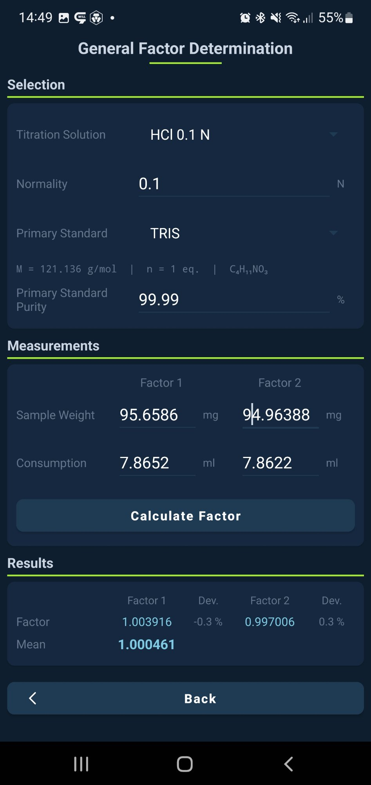
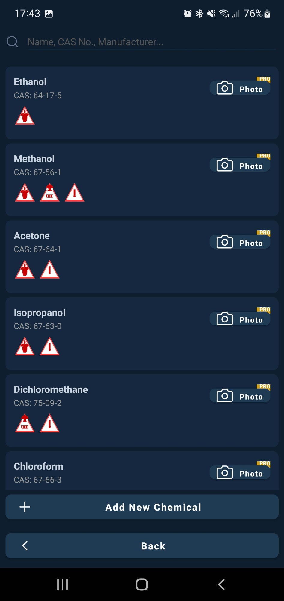
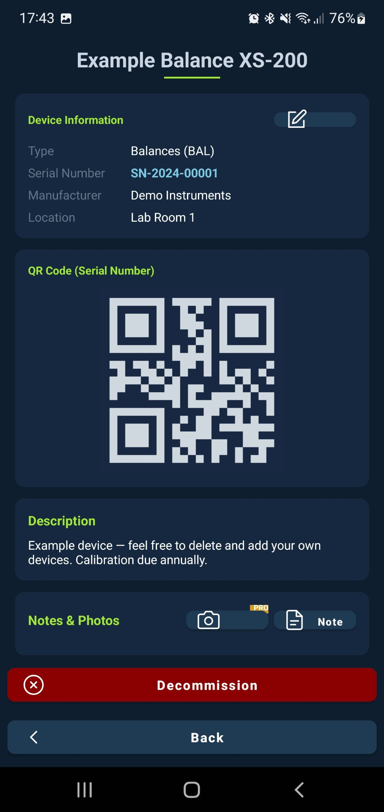
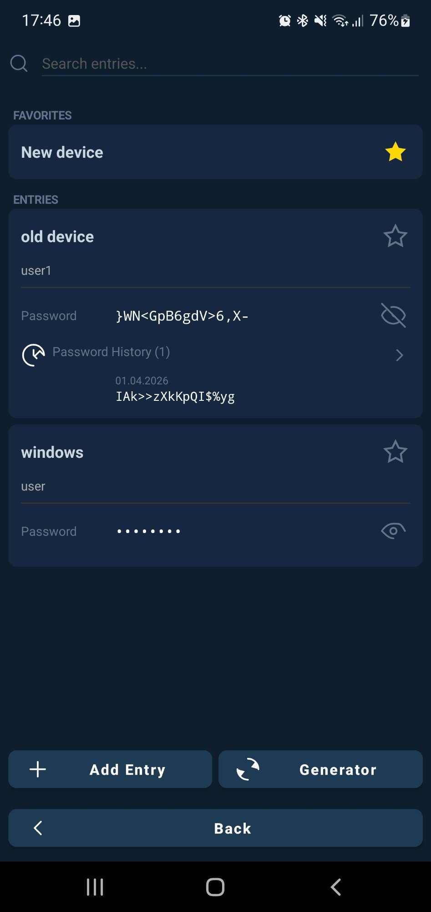

v 1.0.0 · Now on Google PlayJetzt auf Google Play
Your digital
lab companion.Ihr digitaler
Labor-Assistent.
Professional tools for analytical chemists and QC labs — calculations, logbook, chemicals, and more. All offline. No cloud.
Professionelle Werkzeuge für analytische Chemiker und QC-Labors — Berechnungen, Logbuch, Chemikalien und mehr. Vollständig offline. Keine Cloud.
FeaturesFunktionen
Everything your lab needs.Alles was Ihr Labor braucht.
Built for real laboratory work — from quick calculations to full device management.Entwickelt für den Laboralltag — von schnellen Berechnungen bis zum vollständigen Gerätemanagement.
🧮CalculationsBerechnungen
Factor, gravimetric and volumetric calculations with auto-saving. Statistical QC with control charts, outlier detection and calibration curves.Faktor-, gravimetrische und volumetrische Berechnungen mit automatischer Speicherung. Statistische QK mit Regelkarten, Ausreißertest und Kalibriergeraden.
🔣Formula Builder
Create, save and reuse your own calculation formulas with custom variables. Never rebuild the same formula twice.Erstellen, speichern und verwenden Sie eigene Berechnungsformeln mit benutzerdefinierten Variablen. Nie wieder dieselbe Formel neu aufbauen.
📋LogbookLogbuch
Track calibrations, maintenance and inspections per device with sequential numbering, photo attachments and direct email export.Kalibrierungen, Wartungen und Inspektionen pro Gerät mit laufender Nummerierung, Fotos und direktem E-Mail-Export.
⚗️Chemicals & GHSChemikalien & GHS
80+ chemicals with full GHS pictograms, H/P statements, storage notes and PPE recommendations. Add your own with photos.80+ Chemikalien mit vollständigen GHS-Piktogrammen, H/P-Sätzen, Lagerhinweisen und PSA-Empfehlungen. Eigene Chemikalien mit Fotos hinzufügen.
📊Analysis ResultsAnalysenergebnisse
All results are auto-saved, searchable and exportable. Attach photos or scan labels via OCR for full traceability.Alle Ergebnisse werden automatisch gespeichert, sind durchsuchbar und exportierbar. Fotos anhängen oder Labels per OCR scannen.
🔑Password ManagerPasswort-Manager
Store device credentials and lab logins securely with favorites, full dated history and a built-in password generator.Gerätezugänge und Labor-Logins sicher speichern – mit Favoriten, vollständiger History mit Datum und integriertem Generator.
🔒SecuritySicherheit
App lock with PIN or fingerprint. Full backup & restore. No cloud, no ads, no data sharing — everything stays on your device.App-Lock mit PIN oder Fingerabdruck. Vollständiges Backup & Restore. Keine Cloud, keine Werbung – alle Daten bleiben auf Ihrem Gerät.
📱Devices & QRGeräte & QR
Manage your full device inventory with serial numbers, locations, QR codes and complete service history.Vollständiges Geräteinventar mit Seriennummern, Standorten, QR-Codes und kompletter Servicehistorie verwalten.
ScreenshotsScreenshots
See it in action.Die App in Aktion.

Home
All features at a glanceAlle Funktionen auf einen Blick

CalculationsBerechnungenFactor · Gravimetric · VolumetricFaktor · Gravimetrisch · Volumetrisch

Chemicals & GHSChemikalien & GHS80+ chemicals with GHS pictograms80+ Chemikalien mit GHS-Piktogrammen

Device & QR CodeGerät & QR-CodeFull device profileVollständiges Geräteprofil

Password ManagerPasswort-ManagerFavorites · History · GeneratorFavoriten · History · Generator

✓ Free — always
Most features are completely free.Die meisten Funktionen sind kostenlos.
- All calculations — Factor, Gravimetric, VolumetricAlle Berechnungen — Faktor, Gravimetrisch, Volumetrisch
- Full ImbaControl QC suite — control charts, outlier detection, calibration curvesVollständige ImbaControl QK — Regelkarten, Ausreißertest, Kalibriergeraden
- 80+ chemicals with GHS pictograms, H/P statements & storage notes80+ Chemikalien mit GHS-Piktogrammen, H/P-Sätzen & Lagerhinweisen
- Device management with QR codes & full service historyGeräteverwaltung mit QR-Codes & vollständiger Servicehistorie
- Analysis Results — auto-saved, searchable, exportableAnalysenergebnisse — automatisch gespeichert, durchsuchbar, exportierbar
- Formula Builder — 3 saved formulas freeFormula Builder — 3 gespeicherte Formeln kostenlos
- Password Manager — favorites, history & generatorPasswort-Manager — Favoriten, History & Generator
- App lock (PIN / fingerprint), full backup & restoreApp-Lock (PIN / Fingerabdruck), vollständiges Backup & Restore
- No cloud · No ads · No account · No subscriptionKeine Cloud · Keine Werbung · Kein Konto · Kein Abo
⭐ Premium
Unlock even more — one-time.Noch mehr freischalten — einmalig.
- Unlimited photos in Logbook & Analysis ResultsUnlimitierte Fotos im Logbuch & Analysenergebnisse
- Unlimited custom formulas in Formula BuilderUnbegrenzte eigene Formeln im Formula Builder
DocumentationDokumentation
How to use ImberLabSo verwenden Sie ImberLab
Tap any module to expand the instructions.Tippen Sie auf ein Modul, um die Anleitung zu erweitern.
🧮CalculationsBerechnungen
Factor, Gravimetric & VolumetricFaktor, Gravimetrisch & Volumetrisch
Three calculation types for analytical chemistry work:Drei Berechnungstypen für die analytische Chemie:
- Open Calculations from the main menu and choose Factor, Gravimetric or Volumetric.Öffnen Sie Berechnungen im Hauptmenü und wählen Sie Faktor, Gravimetrisch oder Volumetrisch.
- Enter your values in the input fields. Decimal input is supported.Geben Sie Ihre Werte in die Eingabefelder ein. Dezimaleingabe wird unterstützt.
- Tap Calculate to get the result instantly.Tippen Sie auf Berechnen für das sofortige Ergebnis.
- If Save Results is enabled in Settings, the result is automatically saved.Wenn Ergebnisse speichern in den Einstellungen aktiviert ist, wird das Ergebnis automatisch gespeichert.
💡 Use the Formula Builder to create your own custom formulas.Verwenden Sie den Formula Builder für eigene Berechnungsformeln.
📊ImbaControl
Statistical Quality ControlStatistische Qualitätskontrolle
Four statistical tools for process monitoring:Vier statistische Werkzeuge zur Prozessüberwachung:
- Control Chart — Visualizes measurements over time with mean, UCL and LCL lines.Regelkarte — Visualisiert Messwerte über die Zeit mit Mittelwert, OGW und UGW.
- Outlier Test — Detects statistically significant outliers in your dataset.Ausreißertest — Erkennt statistisch auffällige Ausreißer im Datensatz.
- Stability Trend — Analyzes whether a process is stable, increasing or decreasing.Stabilitätstrend — Analysiert ob ein Prozess stabil, steigend oder fallend ist.
- Calibration Curve — Linear regression with R² value for standard curves.Kalibriergerade — Lineare Regression mit R²-Wert für Standardkurven.
💡 ImbaControl results are auto-saved to Analysis Results.ImbaControl-Ergebnisse werden automatisch in den Analyseergebnissen gespeichert.
🔣Formula Builder
Custom calculation formulasEigene Berechnungsformeln
- Enter a name for your formula (e.g. "Yield %").Geben Sie einen Namen für Ihre Formel ein (z.B. "Ausbeute %").
- Type your formula using letters as variables and operators:
+ - * / ^ ( )Geben Sie Ihre Formel ein – Buchstaben als Variablen, Operatoren: + - * / ^ ( )
- Enter the result unit (e.g. g/l, %, mmol).Geben Sie die Ergebniseinheit ein (z.B. g/l, %, mmol).
- Tap Detect Variables — ImberLab finds all variables automatically.Tippen Sie auf Variablen erkennen — ImberLab findet alle Variablen automatisch.
- Enter values and tap Calculate. Tap Save Formula to reuse it later.Werte eingeben und Berechnen tippen. Mit Formel speichern für spätere Verwendung.
💡 Example: ((V*MG)/(e*d*v*1000))*5Beispiel: ((V*MG)/(e*d*v*1000))*5
📋LogbookLogbuch
Device calibration & maintenance recordsKalibrierungs- & Wartungsaufzeichnungen
- Tap + Entry to create a new entry. Select device, type, date and optional next due date.Tippen Sie auf + Eintrag. Gerät, Typ, Datum und optionalen Fälligkeitstermin wählen.
- Each device gets its own sequential numbering (#1, #2, …).Jedes Gerät erhält eine eigene laufende Nummerierung (#1, #2, …).
- Due dates are color-coded: green = OK, orange = due soon, red = overdue.Fälligkeitstermine sind farbkodiert: grün = OK, orange = bald fällig, rot = überfällig.
- Tap Photo (Premium) to attach a photo. Tap Export to share via email.Tippen Sie auf Foto (Premium) für ein Foto. Export zum Teilen per E-Mail.
- Long-press a card to delete all entries for that device.Lang drücken auf eine Karte löscht alle Einträge für dieses Gerät.
💡 Search by device name, date, person or note.Suche nach Gerätename, Datum, Person oder Notiz.
⚗️Chemicals & GHSChemikalien & GHS
Chemical inventory managementChemikalienverwaltung
- Browse or search chemicals by name or CAS number.Chemikalien nach Name oder CAS-Nummer durchsuchen.
- Tap a chemical to see GHS pictograms, H/P statements, storage notes and PPE requirements.Tippen Sie auf eine Chemikalie für GHS-Piktogramme, H/P-Sätze, Lagerhinweise und PSA.
- Tap + Add to create a custom chemical entry.Tippen Sie auf + Hinzufügen für eine eigene Chemikalie.
- Long-press a custom chemical to edit or delete it.Lang drücken auf eine eigene Chemikalie zum Bearbeiten oder Löschen.
- Tap the camera icon (Premium) to attach a photo.Tippen Sie auf das Kamera-Symbol (Premium) für ein Foto.
🖥️Devices & QRGeräte & QR
Lab instrument managementLaborgeräteverwaltung
- Browse devices by category or search across all fields.Geräte nach Kategorie durchsuchen oder alle Felder durchsuchen.
- Tap a device to open its profile: type, serial number, manufacturer, location, description.Tippen Sie auf ein Gerät für das vollständige Profil: Typ, Seriennummer, Hersteller, Standort.
- Each device has a QR code generated from its serial number.Jedes Gerät hat einen QR-Code basierend auf der Seriennummer.
- Use Decommission to retire a device from all lists.Mit Außer Betrieb ein Gerät aus allen Listen entfernen.
📈Analysis ResultsAnalysenergebnisse
Auto-saved calculation historyAutomatisch gespeicherte Berechnungshistorie
- Enable Save Results in Settings to start auto-saving.Aktivieren Sie Ergebnisse speichern in den Einstellungen.
- Tap a card to expand and see full details.Tippen Sie auf eine Karte für alle Details.
- Tap Photo (Premium), Note or Scan to add more information.Tippen Sie auf Foto (Premium), Notiz oder Scan für mehr Informationen.
- Long-press a card to delete that result.Lang drücken auf eine Karte zum Löschen.
🔑Password ManagerPasswort-Manager
Secure credential storageSichere Zugangsdatenverwaltung
- Tap + Add Entry to create a new credential with title, username, password, URL and notes.Tippen Sie auf + Eintrag für einen neuen Eintrag mit Titel, Benutzername, Passwort, URL und Notizen.
- Tap the star to mark an entry as favorite.Tippen Sie auf den Stern um einen Eintrag als Favorit zu markieren.
- Use the eye icon to reveal the password and history together.Das Auge-Symbol zeigt Passwort und History gleichzeitig.
- Tap Generator to create a strong random password.Tippen Sie auf Generator für ein starkes Zufallspasswort.
- Long-press an entry to edit or delete it.Lang drücken auf einen Eintrag zum Bearbeiten oder Löschen.
💡 Free: up to 3 entries. Premium: unlimited.Kostenlos: bis zu 3 Einträge. Premium: unbegrenzt.
⚙️SettingsEinstellungen
App configuration & backupApp-Konfiguration & Backup
- Save Results — toggle auto-saving of calculation results.Ergebnisse speichern — automatisches Speichern von Berechnungsergebnissen.
- App Lock — protect the app with PIN or fingerprint.App-Lock — App mit PIN oder Fingerabdruck schützen.
- Backup — export all data to a local file and restore anytime.Backup — alle Daten in eine lokale Datei exportieren und jederzeit wiederherstellen.
- Premium — purchase or view your Premium status.Premium — Premium kaufen oder Status anzeigen.
💡 Always create a Backup before uninstalling or switching devices.Erstellen Sie immer ein Backup bevor Sie die App deinstallieren oder das Gerät wechseln.
FAQ
Frequently Asked QuestionsHäufige Fragen
Knowledge base for digital laboratory management.Wissensbasis für digitales Labormanagement.
📋Why use a digital calibration logbook instead of paper?Warum ein digitales Kalibrierungslogbuch statt Papier?
Calibration · Logbook · DocumentationKalibrierung · Logbuch · Dokumentation
A digital calibration logbook offers significant advantages over paper-based documentation:Ein digitales Kalibrierungslogbuch bietet entscheidende Vorteile gegenüber der klassischen Papierdokumentation:
- All calibration entries per device at a glance — with due date status (green/orange/red)Alle Kalibriereinträge eines Geräts auf einen Blick — mit Fälligkeitsstatus (grün/orange/rot)
- Sequential numbering per device — no lost or illegible entriesLückenlose Nummerierung pro Gerät — keine verlorenen oder unlesbaren Einträge
- Instant search by device, date, person or note textSofortige Suche nach Gerät, Datum, Person oder Notiztext
- Attach photos directly to entries — e.g. certificates or measurement recordsFotos direkt am Eintrag — z.B. Prüfzertifikate oder Messprotokolle
- Export via email for audits and quality reviewsExport per E-Mail für Audits und Qualitätsprüfungen
💡 ImberLab stores all logbook data locally — no cloud, no subscription.ImberLab speichert alle Logbuchdaten lokal — ohne Cloud, ohne Abonnement.
⚗️What are GHS pictograms and why do I need them?Was sind GHS-Piktogramme und warum brauche ich sie?
GHS · Hazard labeling · ChemicalsGHS · Gefahrstoffkennzeichnung · Chemikalien
The Globally Harmonized System (GHS) for classification and labeling of chemicals is mandatory in the EU (CLP Regulation):Das Global Harmonisierte System (GHS) zur Einstufung und Kennzeichnung von Chemikalien ist in der EU verpflichtend (CLP-Verordnung):
- Every chemical must be labeled with the correct GHS pictogramsJede Chemikalie muss mit den korrekten GHS-Piktogrammen gekennzeichnet sein
- H-statements (hazard) and P-statements (precautionary) must be knownH-Sätze (Gefahrenhinweise) und P-Sätze (Sicherheitshinweise) müssen bekannt sein
- Storage requirements and PPE recommendations must be followedLagerhinweise und persönliche Schutzausrüstung (PSA) müssen eingehalten werden
ImberLab includes 80+ chemicals with complete GHS data — always available offline.ImberLab enthält 80+ Chemikalien mit vollständigen GHS-Daten — jederzeit offline verfügbar.
📊What is statistical quality control (SQC) in the laboratory?Was ist statistische Qualitätskontrolle (SQK) im Labor?
QC · Control chart · Outlier · Calibration curveQK · Regelkarte · Ausreißer · Kalibriergerade
Statistical Quality Control (SQC/SPC) is essential in analytical laboratories to monitor measurement reliability:Statistische Qualitätskontrolle (SQK/SPC) ist unverzichtbar in analytischen Labors:
- Control Chart: Visualizes measurements over time — detects trends and control limit violationsRegelkarte: Visualisiert Messwerte über Zeit — erkennt Trends und Kontrollgrenzen-Verletzungen
- Outlier Test: Identifies statistically significant outliers in your datasetAusreißertest: Identifiziert statistisch auffällige Messwerte im Datensatz
- Stability Trend: Analyzes whether a process is stable, increasing or decreasingStabilitätstrend: Analysiert ob ein Prozess stabil, steigend oder fallend ist
- Calibration Curve: Linear regression with R² value for standard curvesKalibriergerade: Lineare Regression mit R²-Wert für Standardkurven
📱Lab app vs. Excel vs. paper — which is better?Labor-App vs. Excel vs. Papier — was ist besser?
Lab management · Digital transformationLaborverwaltung · Digitale Transformation
| PaperPapier | Excel | ImberLab |
|---|
| SearchSuche | ManualManuell | LimitedEingeschränkt | InstantSofort |
| PhotosFotos | SeparateSeparat | CumbersomeUmständlich | IntegratedIntegriert |
| Due datesFälligkeiten | ManualManuell | Needs macrosMakros nötig | AutomaticAutomatisch |
| Offline | YesJa | PartialTeilweise | AlwaysImmer |
| PrivacyDatenschutz | PhysicalPhysisch | Cloud riskCloud-Risiko | Local & secureLokal & sicher |
🔒Is my lab data safe in the app?Sind meine Labordaten in der App sicher?
Privacy · GDPR · Offline · no cloudDatenschutz · DSGVO · Offline · keine Cloud
- 100% offline — no internet required, no cloud upload100% offline — keine Internetverbindung erforderlich, kein Cloud-Upload
- GDPR compliant — all data stays on the user's deviceDSGVO-konform — alle Daten bleiben auf dem Gerät des Nutzers
- App lock — PIN or fingerprint protects accessApp-Lock — PIN oder Fingerabdruck schützt den Zugriff
- No tracking — no ads, no analytics SDKs, no data sharingKein Tracking — keine Werbung, keine Analyse-SDKs, keine Datenweitergabe
- Backup — manual local backup available at any timeBackup — manuelles lokales Backup jederzeit möglich
💡 Ideal for labs with strict data protection or ISO certification requirements.Ideal für Labors mit strengen Datenschutzrichtlinien oder ISO-Zertifizierungsanforderungen.
Privacy PolicyDatenschutzerklärung
Last updated: April 2026Letzte Aktualisierung: April 2026
Summary:Kurzfassung: ImberLab stores all data exclusively on your device. No cloud. No ads. No tracking. No third-party sharing.ImberLab speichert alle Daten ausschließlich lokal auf Ihrem Gerät. Keine Cloud. Keine Werbung. Kein Tracking. Keine Weitergabe.
§ 01
ControllerVerantwortlicher
Christoph Imber
Schulterbergstr. 4, 4742 Pram, Upper Austria, AustriaOberösterreich, Österreich
chr.mathai@gmail.com
§ 02
Core Principle: No Cloud, No SharingGrundsatz: Keine Cloud, keine Weitergabe
ImberLab stores all data exclusively on your device. No personal data is transmitted, sold or shared. No advertising, no tracking.ImberLab speichert alle Daten ausschließlich lokal auf Ihrem Gerät. Es werden keine personenbezogenen Daten übertragen, verkauft oder weitergegeben. Keine Werbung, kein Tracking.
§ 03
Data Collected and PurposeErhobene Daten und Zweck
3.1 Camera3.1 Kamera
With permission, the app can take photos for logbook and chemical entries. Photos are stored locally only.Die App kann mit Erlaubnis Fotos für Logbucheinträge und Chemikalien aufnehmen. Fotos werden ausschließlich lokal gespeichert.
3.2 Stored Lab Data3.2 Gespeicherte Labordaten
- Device and calibration recordsGeräte- und Kalibrierdaten
- Logbook entries including optional photosLogbucheinträge inkl. optionaler Fotos
- Calculation results and analysis recordsBerechnungsergebnisse und Analyseresultate
- Chemical informationChemikalieninformationen
- Custom formulasEigene Formeln
- Passwords and credentials (stored locally)Passwörter und Zugangsdaten (lokal gespeichert)
3.3 Backup3.3 Backup
Backup creates a local file on your device. No automatic cloud sync.Backup erstellt eine lokale Datei auf Ihrem Gerät. Keine automatische Cloud-Synchronisation.
3.4 In-App Purchase3.4 In-App-Kauf
Processed via Google Play Billing. ImberLab does not receive payment data.Abwicklung über Google Play Billing. ImberLab erhält keine Zahlungsdaten.
§ 04
PermissionsBerechtigungen
| PermissionBerechtigung | PurposeZweck |
|---|
| CameraKamera | Photos for logbook and chemicalsFotos für Logbuch und Chemikalien |
| StorageSpeicher | Save/load backup filesBackup-Dateien speichern/laden |
| BiometricsBiometrie | App lock via fingerprintApp-Lock per Fingerabdruck |
§ 05
Data SharingDatenweitergabe
No data shared with third parties. No external server communication.Keine Weitergabe an Dritte. Keine Kommunikation mit externen Servern.
§ 06
Data SecurityDatensicherheit
Protected by Android device security and built-in app lock (PIN or biometrics).Schutz durch Android-Geräteschutz und integrierten App-Lock (PIN oder Biometrie).
§ 07
User RightsRechte der Nutzer
- Access – viewable locally on your deviceAuskunft – lokal auf Ihrem Gerät einsehbar
- Deletion – via Android SettingsLöschung – über Android-Einstellungen
- Data portability – via backup/export functionDatenportabilität – über Backup/Export-Funktion
§ 08
ChildrenKinder
Not directed at children under 13.Nicht für Kinder unter 13 Jahren bestimmt.
§ 09
ChangesÄnderungen
Changes will be announced on the app's store page.Änderungen werden auf der Store-Seite bekannt gegeben.
§ 10
ContactKontakt
✉️
For privacy questions:Bei Fragen zum Datenschutz:
chr.mathai@gmail.com